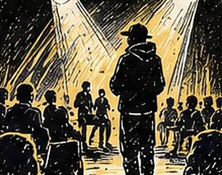
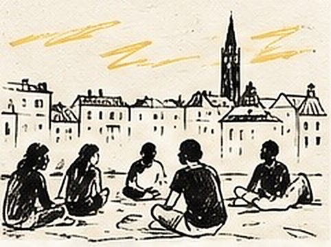
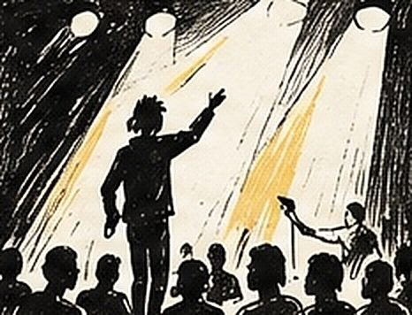

Printemps des poètes à Albi : deux collèges, une scène commune
Deux collèges du Tarn mènent le même projet slam pour le Printemps des poètes, se partagent les frais et se retrouvent sur une scène commune. C'est la quatrième année.
Auteur : Esope · Intervenants slam : Esope

Chaque année, deux collèges du Tarn — Jean-Jaurès à Albi et Augustin-Malroux à Blaye-les-Mines — mènent le même projet dans le cadre du Printemps des poètes. Deux classes dans chaque établissement, environ cinq heures par classe, et une restitution commune dans l'amphithéâtre du lycée de Blaye-les-Mines, devant plus de deux cents personnes. C'est la quatrième année que ce projet se monte.
Le contexte : deux établissements, un seul projet
Le montage est malin et mérite d'être connu, parce qu'il résout la question qui bloque le plus souvent les projets en zone rurale : les frais de déplacement. En se coordonnant sur les mêmes dates, les deux collèges se les partagent. Chacun paie ses heures d'atelier, mais un seul déplacement dessert quatre classes. Pour un établissement seul, le même projet aurait un coût sensiblement plus élevé.
Le Printemps des poètes offre par ailleurs un cadre idéal : il donne une échéance, un thème national, et une raison institutionnelle d'inviter un intervenant. Le slam y a toute sa place — c'est de la poésie qui se dit, et c'est souvent la porte d'entrée la plus efficace pour des élèves que le mot « poème » fait reculer.

Le déroulement du projet
Cinq heures par classe, c'est un format resserré : il faut que chaque élève reparte avec un texte qu'il peut dire. Le déroulé est donc très cadré.
- Séance 1. Jeux oraux collectifs, puis première écriture guidée par anaphore. Tout le monde produit quelque chose dès la première heure — c'est la règle que je ne négocie pas.
- Séance 2. Travail d'image : comparaison, métaphore, détail concret. On enrichit le texte de la séance 1 plutôt que d'en commencer un nouveau.
- Séance 3. Mise en voix. Débit, silences, regard, placement du corps. Passage individuel devant la classe.
- Répétition générale. Sur place, dans l'amphithéâtre, avec la sonorisation. Cette séance-là vaut toutes les autres pour la confiance.
La coordination entre les quatre classes se fait sur l'ordre de passage et sur quelques moments collectifs — un vers repris en chœur, une ouverture à plusieurs voix. Les élèves des deux collèges ne se rencontrent que le jour même, ce qui ajoute un enjeu que je n'aurais pas su fabriquer autrement.
Les techniques travaillées
Sur cinq heures, je privilégie l'anaphore, la comparaison et le travail de la chute pour l'écrit ; le débit, le silence et l'adresse pour l'oral. Ce sont les outils qui donnent le plus de résultat par heure investie. La réécriture longue et la construction en parties relèvent des projets plus étendus, comme celui mené au collège d'Arveyres sur plus de vingt heures.
Ce que les élèves ont travaillé
Le projet permet de travailler la prise de parole devant un très grand public — rare dans une scolarité —, la maîtrise du langage poétique, et la capacité à porter un texte personnel sans se cacher derrière. Les élèves ont été amenés à affronter une salle de deux cents personnes avec un texte qu'ils ont écrit eux-mêmes. C'est impressionnant pour eux, et c'est précisément pour ça que c'est valorisant : la tâche est difficile, et ils l'accomplissent.

Le moment marquant
Ce qui me frappe, année après année, c'est le moment juste avant l'entrée en scène. Les élèves qui ont le plus plaisanté pendant les séances sont les plus silencieux en coulisses. Et le moment juste après : une élève qui redescend de scène, encore essoufflée, qui ne dit rien et qui a l'air d'avoir grandi de dix centimètres. La quatrième année, je m'y attends, et ça me fait le même effet.
Ce que ce projet a permis d’explorer
Quatre ans que ce projet se reconduit, avec les mêmes établissements et des élèves différents. C'est sans doute le meilleur indicateur : un projet slam bien calé ne s'épuise pas, il devient un rendez-vous. D'autres établissements ont raconté leurs projets dans la presse locale. Si vous préparez une édition du Printemps des poètes, ou si vous cherchez un établissement voisin avec qui mutualiser, parlons-en tôt dans l'année.